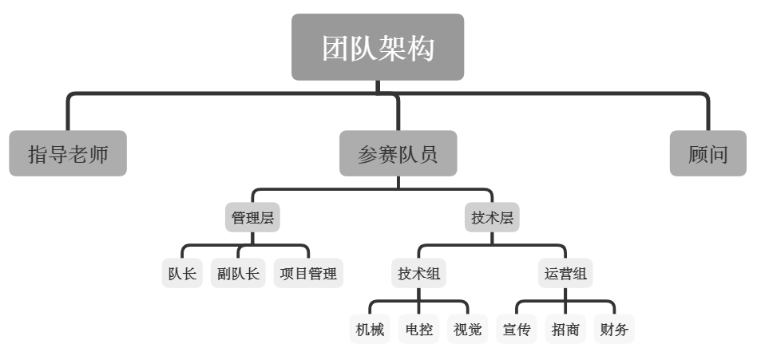

3.1. 人员管理¶
3.1.1. 明确分工¶
3.1.1.1. 整体架构¶
参赛队应落实每一位队员的定位。
定位如下：
指导老师： 团队总负责人， 负责团队的建设和管理，负责指导队伍制作机器人。
需对全体队员的人身财产安全负责
协调校内资源，指导团队制定项目计划，把控备赛进度，帮助团队顺利完成比赛
参赛期间，指导老师需积极配合组委会工作
顾问： 团队指导。
给团队提供战略、技术、管理等技术与支持
可承担实际的机器人制作工作及其他参赛事务
队长： 队伍核心成员，队伍技术、战术负责人。负责队伍的建立、管理经营。组委会、学校资源对接。一般情况下，队长都是技术出身，能够做技术的领头羊把握技术大方向。
队伍的管理运营，如建立队伍、队员管理机制
把控队伍的整体方向，如分析局势，确定当赛季成绩预期、技术方向、运营目标等
任务划分及评估，如明确各组职责、工作安排并对每个节点各组的工作进行评估，及时调整赛队方向和策略
对接组委会，如执行组委会的需求或向组委会提需求
对接学校资源，如跟学院、学校、指导老师建立并维护关系，以此解决队伍资源问题
对接其他参赛队伍，如组织队伍间交流、审核对外的宣传素材、技术素材等
项目管理： 队伍大管家，项目整体管理者。负责把控项目整体进度，对团队进行合理规划和管理，积极组织和推动项目进展，建立健全各类团队管理规范和制度。
项目进度把控，如按照与队长共同制定的各组的任务和完成节点，对每一项任务的完成度进行监督把控，及时与队长汇报并分析风险
协调各组工作，如对各组工作间的配合、矛盾进行协调，搜集各组反馈意见并进行处理
成本预算把控，如制定预算方案、控制项目成本，审核并决定供应商等
梳理和修订队内流程，撰写技术文档
关注队员一学期的课程设置情况，清楚各学科考试时间，合理安排项目进度和实验室成员复习时间
各组组长及组员定位： 特定任务的执行者，规定时间内保质保量完成本职工作。
相关技术的牵头羊，把握整组技术走向和方案设定
与本组队员、队长以及其他组长沟通交流，解决不同组、不同分工成员沟通交流少，信息更新不及时的问题。
宣传经理： 宣传推广负责人。
策划、组织开展参赛队各类活动，如招新、校内赛等
负责参赛队日常线上运营，如微信、微博、知乎等
对接校内各大媒体平台，帮助参赛队扩大校内名声
及时与组委会宣传经理负责人对接，及时反馈赛队宣传类问题及需求
招商经理： 招商负责人。
编纂招商手册，设定招商方案
寻找外在赞助资源，及时对接各类大小企业
与赞助商沟通赞助权益、落实各赞助商赞助权益，定期给赞助商权益落实反馈
维护赞助商关系，定期回访赞助商（包括所有过往赞助商）
及时与组委会招商经理负责人对接，反馈赛队问题。及时反馈赞助商权益和各项合作给组委会。
在整体架构中，除了技术组的划分，参赛队要做好梯队的划分（详见 建立梯队），最起码应包含战队预备役及核心队员，根据能力划分梯队，明确每一梯队的职责，促进以老带新，技术提高。
3.1.1.2. 研发组织架构¶
整体架构以对队伍技术方向及职位作出合理的规划，但研发机器人的过程需要不同组之间密切的交流，并共同为研发的机器人负责，所以建议队伍根据自身情况选择是否建立研发组织架构。

纵向黄色的图例为技术方向，分为四个组，每个组包含负责这个方向工作的所有同学，各组有一名技术负责人，这个人需有较强的协调能力和专业技术能力，应为组内技术实力较优的成员。其中，测试一般不单独分组，但需要各技术方向的同学来担任测试任务。包括备赛期进行模块级测试、整机功能测试、机器人之间对战的测试等。测试组应该对一个开发任务是否完成有最终决定权，组内成员最后选拔成为比赛操作手。
横向蓝色的图例按照兵种分为项目组。建议每个项目组安排一个产品经理，这个人优先让老队员担任，需要知识面宽广，熟悉机械、硬件、软件的工作内容，对机器人的需求有洞察力，能厘清优先级。队长和产品经理商讨决定每个兵种的定位和功能作为项目需求，而后产品经理和项目组内部人员理解并确定项目需求。此外，产品经理还需要和各组技术负责人确定人力需求，最后战队按需求制定项目计划，并开始执行，由项目管理进行进度监督。
3.1.2. 建立梯队¶
梯队的建立对于一个参赛队而言也是极其重要的，有助于梳理团队架构，明确每一梯队的任务职责，队伍管理起来也就事半功倍；也能帮助建立一套完整合理的培训体系，标记一个入门小白到大佬的进阶。
梯队划分
建议团队梯队以能力为标准评判，而不是年级。可分为社团成员、实验室成员和战队成员，战队成员可又分为预备役和核心队员。各参赛队根据自身情况可适当调整，对于新参赛队而言，如人员较少可以直接分为预备役和核心成员，等积累到达一定程度时，可考虑建立一套完整的梯队。
明确职责
每一梯队是能力的体现，那么根据他们具备的专业能力来划分职责，例如能力不强者可在学习阶段参与团队宣传、组织活动等，扩大实验室影响力，能力具备者可参与备赛，能力极佳者则是直接作为参赛队员备赛参赛。
3.1.3. 培训体系¶
3.1.3.1. 培训重点¶
根据战队自身情况来制定培训的重点。范例如下：
机械组
培养良好的加工习惯；
需要有实物加工与组装实践；
基本的软件使用，包括SolidWorks、CAXA、mastercam等；
实验室基本工具的使用方法，包括大力钳，锉刀，手钻等；
实验室加工设备培训，包括钻床、雕刻机、电焊机、车床等；
查询机械设计手册、调用标准件库、SMC气缸选型等等；
要达到培训了之后能够自主设计部分机构的效果。
电控/嵌入式组
配以基础的系统板，将代码结合相关硬件实践运行；
STM32单片机的基本开发和相关通信及电路，如何搭建闭环控制系统，然后编写经典PID算法控制并调参；
学习电子及自动化相关专业教材、单片机的开发指南、参考手册、数据手册、网络相关指导贴等理论部分。
视觉/算法组
学习opencv，git的使用；
实操具体的小任务例如识别队徽，单目测距等；
研究各参赛队伍的开源代码构思自己的视觉方案。
运营组
学习PS、AI、AE、PR其中2种设计软件；
线上运营各大公众平台，线下举办活动；
锻炼独立思考能力、协调沟通能力和执行力。
3.1.3.2. 验收培训效果¶
培训绝不是放养，给了资料就放任新人自由发展。试想下，没有验收制度来维持活跃度，把控质量，单单只有培训能有几个人完成整个培训过程。
阶段验收
在每学习一项技能，每学习一个阶段时都应设立测试或提交相应的内容来保证活跃度，并根据反馈情况及时调整培训流程。
考核
梯队每一阶段培训的完成都应进行考核，来评判是否达标进入下一梯队。
入门培训结束后可设立循迹小车、结构设计、图像识别等题目来进行考核，其余梯队考核内容则可根据自身情况灵活设定。除了技术方面的考核：技能是否足够支持研发这一评判考核外，还要在日常生活中观察个人是否积极参与备赛、是否具备较好沟通交流能力、是否具有按时完成相应任务意识等来判断是否适合成为战队的一员。
3.1.4. 操作手选拔¶
对于竞技比赛而言，操作手的作用不容小觑。RoboMaster赛场赛制复杂，战场存在很多增益点，有时候前期发挥不佳的队伍甚至可以凭借操作手的出色发挥来力挽狂澜。各参赛队需要在技术研发之外，同样重视操作手选拔。
目前有两种选拔操作手的常见方式。一是由队内研发人员担任操作手，优点是更加了解机器人，遇见突发状况更懂得如何处理。但并不一定每一个研发拥有很好的游戏意识，能较好的操作机器人；二是公开在校内选拔更加具有比赛思维的操作手。但未参与研发的操作手和队内成员的融入效果可能存在困难。两种方式中的抉择，需要队内达成共识，制定严格的训练制度，例如哪些时间段进行训练，必须掌握的知识等等。各参赛队根据自身情况灵活进行操作手选拔，在游戏操作经验及技术研发经验中找到平衡。
操作手只能由本届参赛队伍的正式队员担任，每局比赛结束后，可以替换操作手。操作手阵容相关信息见当赛季的 比赛手册。
3.1.5. 战术分析¶
七分钟的比赛阶段是两支队伍的机器人在核心比赛场地—战场内进行战术对抗。战术在比赛中有非常重要的意义。对于瞬息万变的战场而言，出色的战术部署以及操作手配合极好的发挥可以改变战局。
参考内容见：